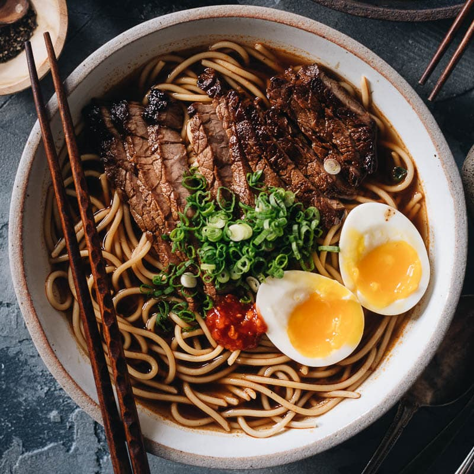

Yakamein (New Orleans-Style Noodle Soup)

Description
This is my take on yakamein (New Orleans-style noodle soup) that's famous only locally, but is one soup you'll want to know about. Known in New Orleans as a very effective hangover cure—its nickname is Old Sober—it is also a beautifully comforting and delicious thing to eat.
Ingredients
- 1 1/2 pounds beef chuck roast, cut into 1-inch pieces
- 1 1/2 teaspoons kosher salt
- 1 teaspoon freshly ground black pepper
- 1/2 teaspoon cayenne pepper, or to taste
- 1/2 teaspoon paprika
- 2 tablespoons avocado oil or vegetable oil
- 1 cup chopped yellow onion
- 1/2 cup diced celery
- 1/2 cup diced green pepper
- 4 cloves garlic, minced
- 2 tablespoons soy sauce
- 1 1/2 teaspoons Worcestershire sauce
- 1 1/2 teaspoons granulated garlic
- 8 cups water
- 2 tablespoons beef bouillon paste
- 12 ounces dry spaghetti
- 4 large hard boiled eggs, peeled and halved
- 1 cup sliced green onions
Steps
-
Place beef pieces into a bowl and add salt, black pepper, cayenne pepper, and paprika. Toss very thoroughly until meat is evenly coated. Let sit at room temperature for about 20 minutes before browning, or place in the fridge until needed.
-
Add oil to a heavy-bottomed pot, and heat on high until oil is shimmering. Add beef in a single layer, and sear until a nice brown crust forms, 3 to 5 minutes.
-
Turn beef over, and let other side cook about 2 minutes. The second side will not brown like the first, but that’s okay. Turn heat down to medium-high; remove beef to a bowl and set aside.
-
Add onions, celery, peppers, and minced garlic to the pot, and cook, stirring, until onions begin to turn translucent, 3 to 5 minutes.
-
Add beef back in along with any accumulated juices. Add soy sauce, Worcestershire sauce, granulated garlic, water, and beef bouillon paste. Stir and wait for soup to come to a simmer. Lower heat to medium-low and simmer until the meat is very tender, 60 to 90 minutes.
-
Before serving, taste and adjust with more salt or soy if needed. Keep soup on low heat until ready to serve.
-
Bring a large pot of lightly salted water to a boil. Cook spaghetti in the boiling water, stirring occasionally, until tender, about 12 minutes. Drain, and divide evenly between 4 large soup bowls.